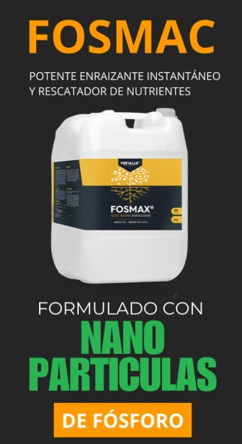

¡Nutrición completa y natural para tus cultivos!
Ofrecemos Fertilizante ecológico enriquecido con cobre, magnesio, zinc y microelementos, diseñado para:
Estimular la síntesis de moléculas orgánicas
Impulsar el crecimiento y desarrollo de la planta
Mejorar el transporte de agua y nutrientes a través del xilema y floema
Fortalecer la resistencia frente a infecciones causadas por microorganismos
Ideal para cultivos saludables, resistentes y productivos.

Fosmac
¡Impulsa tus cultivos desde la raíz!
Descubre nuestro Enraizante potente e instantáneo, con nanopartículas de fósforo que:
-Rescatan nutrientes del suelo
-Aumentan la productividad
-Reducen costos
-Protegen el medio ambiente
-Ofrecen una rápida asimilación, superando a los fertilizantes tradicionales